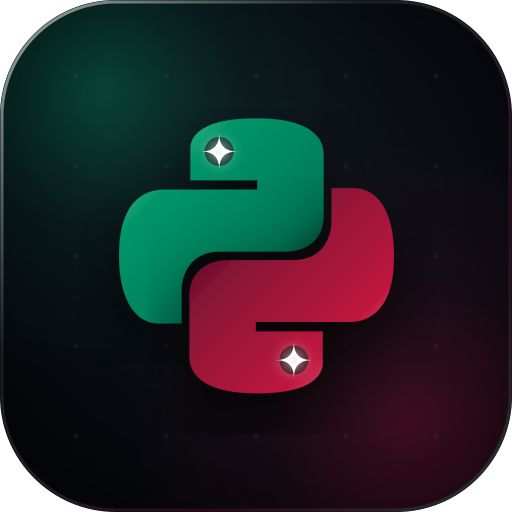

Векторный файл icon.svg: Имперский Изумруд & Grand Cru Бургунди (без кричащего неона)

Бархатный аристократичный баланс: убрана избыточная неоновая крикливость. Верхняя змея переливается глубоким колумбийским изумрудом и турмалином, нижняя — выдержанным рубиновым бургунди Grand Cru. Искорки ✨ дают чистый ослепительный кристальный фокус.